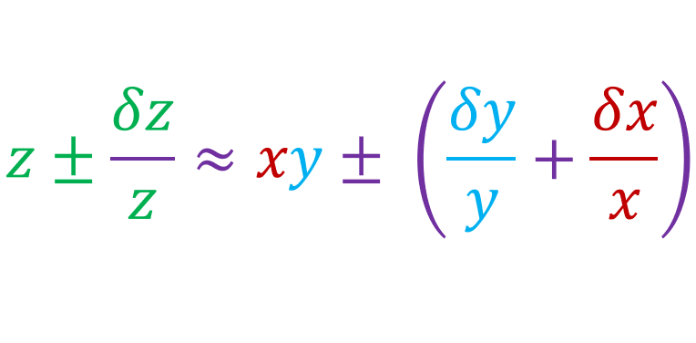

Lets say I have two measured values, y and x:
And lets say we have define z as:
If we expand the above equation, then:
Since δy and δx are very small numbers, we can conclude that:
Since [z = xy], then:
Now let Rx and Ry be the relative uncertainties, such that:
Which would mean:
Hence, we just proved that:
This means that the relative uncertainty of the product (z) is equal to the sum of the relative uncertainty of the two measured values (x and y). So if we ever have to multiply two measured values, then the we just have to add the uncertainty of the two measured values to get the uncertainty of the final value:
